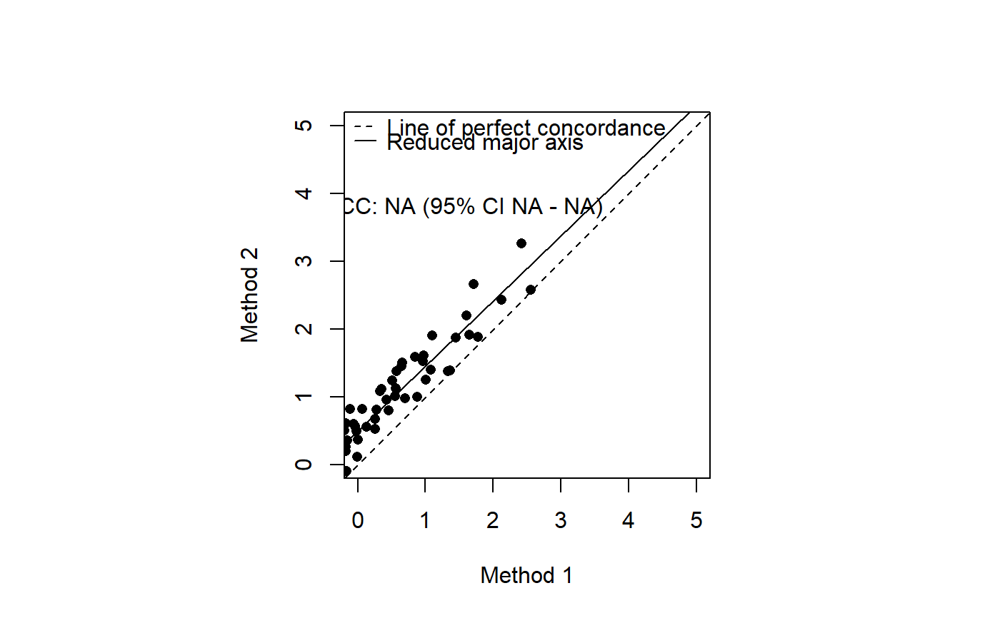
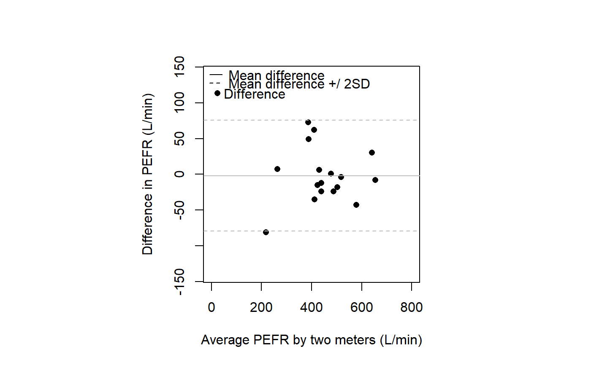

CCC.RdCalculates Lin's concordance correlation coefficient for agreement on a continuous measure.
CCC(x, y, ci = "z-transform", conf.level = 0.95, na.rm = FALSE)
| x | a vector, representing the first set of measurements. |
|---|---|
| y | a vector, representing the second set of measurements. |
| ci | a character string, indicating the method to be used. Options are |
| conf.level | magnitude of the returned confidence interval. Must be a single number between 0 and 1. |
| na.rm | logical, indicating whether |
Computes Lin's (1989, 2000) concordance correlation coefficient for agreement on a continuous measure obtained by two methods. The concordance correlation coefficient combines measures of both precision and accuracy to determine how far the observed data deviate from the line of perfect concordance (that is, the line at 45 degrees on a square scatter plot). Lin's coefficient increases in value as a function of the nearness of the data's reduced major axis to the line of perfect concordance (the accuracy of the data) and of the tightness of the data about its reduced major axis (the precision of the data).
Both x and y values need to be present for a measurement pair to be included in the analysis. If either or both values are missing (i.e. coded NA) then the measurement pair is deleted before analysis.
A list containing the following:
the concordance correlation coefficient.
the scale shift.
the location shift.
a bias correction factor that measures how far the best-fit line deviates from a line at 45 degrees. No deviation from the 45 degree line occurs when C.b = 1. See Lin (1989, page 258).
a data frame with two columns: mean the mean of each pair of measurements, delta vector y minus vector x.
Bland J, Altman D (1986). Statistical methods for assessing agreement between two methods of clinical measurement. The Lancet 327: 307 - 310.
Bradley E, Blackwood L (1989). Comparing paired data: a simultaneous test for means and variances. American Statistician 43: 234 - 235.
Dunn G (2004). Statistical Evaluation of Measurement Errors: Design and Analysis of Reliability Studies. London: Arnold.
Hsu C (1940). On samples from a normal bivariate population. Annals of Mathematical Statistics 11: 410 - 426.
Krippendorff K (1970). Bivariate agreement coefficients for reliability of data. In: Borgatta E, Bohrnstedt G (eds) Sociological Methodology. San Francisco: Jossey-Bass, pp. 139 - 150.
Lin L (1989). A concordance correlation coefficient to evaluate reproducibility. Biometrics 45: 255 - 268.
Lin L (2000). A note on the concordance correlation coefficient. Biometrics 56: 324 - 325.
Pitman E (1939). A note on normal correlation. Biometrika 31: 9 - 12.
Reynolds M, Gregoire T (1991). Comment on Bradley and Blackwood. American Statistician 45: 163 - 164.
Snedecor G, Cochran W (1989). Statistical Methods. Ames: Iowa State University Press.
## Concordance correlation plot: set.seed(seed = 1234) method1 <- rnorm(n = 100, mean = 0, sd = 1) method2 <- method1 + runif(n = 100, min = 0, max = 1) ## Introduce some missing values: method1[50] <- NA method2[75] <- NA tmp.ccc <- CCC(method1, method2, ci = "z-transform", conf.level = 0.95) lab <- paste("CCC: ", round(tmp.ccc$rho.c[,1], digits = 2), " (95% CI ", round(tmp.ccc$rho.c[,2], digits = 2), " - ", round(tmp.ccc$rho.c[,3], digits = 2), ")", sep = "") z <- lm(method2 ~ method1) par(pty = "s") plot(method1, method2, xlim = c(0, 5), ylim = c(0,5), xlab = "Method 1", ylab = "Method 2", pch = 16)legend(x = "topleft", legend = c("Line of perfect concordance", "Reduced major axis"), lty = c(2,1), lwd = c(1,1), bty = "n")## Bland and Altman plot (Figure 2 from Bland and Altman 1986): x <- c(494,395,516,434,476,557,413,442,650,433,417,656,267, 478,178,423,427) y <- c(512,430,520,428,500,600,364,380,658,445,432,626,260, 477,259,350,451) tmp.ccc <- CCC(x, y, ci = "z-transform", conf.level = 0.95) tmp.mean <- mean(tmp.ccc$blalt$delta) tmp.sd <- sqrt(var(tmp.ccc$blalt$delta)) plot(tmp.ccc$blalt$mean, tmp.ccc$blalt$delta, pch = 16, xlab = "Average PEFR by two meters (L/min)", ylab = "Difference in PEFR (L/min)", xlim = c(0,800), ylim = c(-140,140))legend(x = "topleft", legend = c("Mean difference", "Mean difference +/ 2SD"), lty = c(1,2), bty = "n")